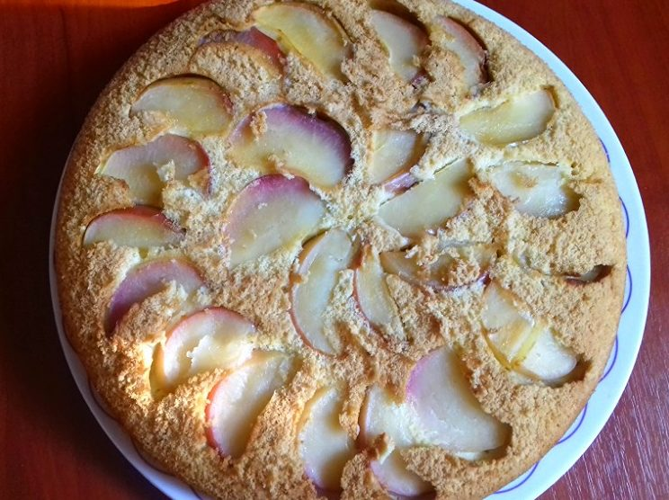
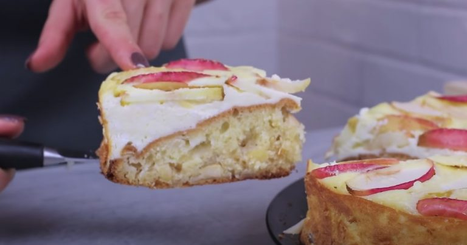

Яблочный пирог с творогом.
Рецепт ароматной выпечки для всей семьи

Если ранее вам не доводилось пробовать яблочные творожные пироги, вы многое потеряли.
Это поистине вкусная и необычная выпечка в мире классических шарлоток. Она может
похвастаться новым смешением вкусов, а также насытит вас на весь дальнейший день.
Приготовление не сложное, надо лишь соблюдать алгоритм готовки.
Ингредиенты творожной шарлотки:
- Мука — 200 г;
- Яблоки — 4 шт.;
- Яйца куриные — 5 шт.;
- Соль — щепотка;
- Сахар — 100 г;
- Разрыхлитель — 10 г;
- Теплое молоко — 80 мл;
- Растопленное сливочное масло — 30 г;
- Растительное масло — 70 мл;
- Творог — 200 г;
- Кукурузный крахмал — 2 ст. л.;
- Сметана — 200 г;
- Сахар — 3 ст. л.
Приготовление творожного пирога:
В отдельную тару разбиваем 2 яйца, солим и высыпаем 100 грамм сахара. Венчиком смешиваем продукты, пока не растворится сахар.
К яичной смеси выливаем молоко, растопленное заранее сливочное масло и подсолнечный жир. Перемешиваем ингредиенты.
Также соединяем муку и разрыхлитель, просеиваем сыпучие продукты в яично-молочную жижу. Взбиваем венчиком тесто до однородного состояния, важно, чтобы не попадалось комков.
Два яблока нарезаем на небольшие кубики, убирая сердцевину, но оставляя кожуру.
Добавляем яблоки в тесто, повторно перемешиваем. Форму для выпекания застилаем пергаментом, выливаем туда тесто.
Духовку разогреваем до 180 градусов, выпекаем бисквит полчаса.
В миске смешиваем творог, сметану, 3 яйца, крахмал и сахар до однородного состояния. Нарезаем на тонкие слайсы оставшиеся яблоки, аналогично удаляя все лишнее.
Когда бисквит будет готов, не нужно ждать, пока он остынет. Мы сразу выливаем в форму с бисквитом творожную начинку и украшаем слайсами из яблок верхнюю часть.
Убираем пирог обратно в духовку, готовим при 180 градусах 15-20 минут.
